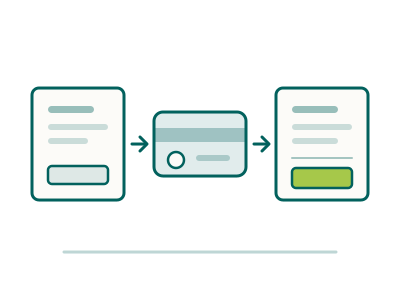

Money, tax &
banking in Australia
Four things to set up, one refund people routinely miss, and one decision most clinicians accept by default when they should make it deliberately.

The order to do things in
Almost all of this is straightforward. It goes wrong when people do it in the wrong sequence, and the commonest version of that is starting work before the tax office knows you exist.
- Before you fly
Open a bank account online
The major banks let you open a transaction account from overseas, then verify your identity at a branch when you arrive. It costs nothing and it means your bond and your first salary have somewhere to land.
- Week one
Apply for your Tax File Number
Free, online, and only possible once you are in the country with work rights. Until your employer has it, they are obliged to withhold tax at the top rate.
- Week one
Verify your identity at a branch
Passport and, ideally, a local address. This activates the account you opened from overseas and usually gets you a card the same week.
- Before your first pay run
Choose your super fund, deliberately
Your employer will ask, or will quietly default you. This is the one decision on this page that compounds for forty years, and the section below is about why it deserves ten minutes.
- First month
Sort out Medicare, or your exemption
Either enrol if you are entitled, or get the statement that lets you claim an exemption from the levy. Both routes need doing; neither happens automatically.
- First month
Decide about private hospital cover
Not a lifestyle question but an arithmetic one, because of the surcharge. Explained below.
- Ongoing
Keep your first-year paperwork
Arrival date, visa grant, any foreign income, and the date you started work. Your first tax return is the one where residency and part-year thresholds matter, and the paperwork makes it painless.
Your Tax File Number
A TFN is your permanent personal reference with the Australian Taxation Office. One number, issued once, yours for life. Including if you leave Australia and come back a decade later.
You apply after you arrive, online, once you hold a visa with work rights. It is free. There are commercial sites that will charge you to submit the same form, and there is no version of the process where paying is faster or better. Apply through the ATO directly.
Give the number to your employer as soon as it arrives, and to your bank and your super fund. Until your employer has it they are legally required to withhold tax at the highest rate, which you would get back eventually through your return, but it makes your first month or two considerably leaner than it needs to be.
One habit worth keeping from day one: your TFN is a sensitive identifier. Legitimate parties who ask for it are your employer, your bank, your super fund and the ATO. Nobody else needs it, and no genuine organisation will ever ask for it by email or text.
Opening a bank account
Easier than in most countries, and one of the few things worth doing before you get on the plane.
How it works
- Apply online from overseas. The major banks all offer a migrant or newcomer account you can open before arrival, months ahead if you like.
- Verify in a branch on arrival with your passport. Bring your visa grant notice too; it saves questions.
- Everyday banking is app-first and payments between accounts are near-instant, including to businesses and individuals.
- You will need a BSB and account number to give your employer, the two numbers that together identify an Australian account.
- Cheques are effectively extinct. Do not budget any part of your move on being able to pay by cheque.
Worth knowing
- Monthly account fees are common but usually waived above a modest monthly deposit, which a salary comfortably clears. Ask rather than assume.
- Give your bank your TFN when it arrives. Without it, tax is withheld from any interest you earn.
- Tap-and-go is universal, and a surcharge for card payment is legal and common in cafés and taxis.
- Keep your home-country account open for at least the first year. Closing it early makes transfers, pensions and any lingering direct debits harder than they need to be.
- Credit history does not travel. You start from nothing here, which matters for borrowing later but not for everyday banking.
Superannuation, and the choice most people accept by default
Superannuation is Australia’s compulsory retirement saving, and it is one of the better features of working here. Your employer pays a legislated percentage of your earnings into a fund on top of your salary.
The rate is set by law rather than negotiated, it has been rising in steps, and you should check the current figure, but the important point is structural: it is additional to your pay, not deducted from it. When you compare a package here against one at home, super is real money that a salary comparison alone will miss.
In most cases you can choose the fund. If you do not choose, one of two things happens: your existing fund is used if you already have one, or your employer’s default applies. Health sector employers commonly offer an industry fund, and industry funds are generally low-fee and perfectly reasonable, but there is a difference between choosing that and being defaulted into it without looking.
What to actually look at, in order: the fees, the long-run net performance, the insurance built into the default option and whether you need it, and the investment mix relative to your age and your plans. Ten minutes on the government’s comparison tool is enough to make a defensible choice, and small fee differences compound into large numbers across a career.
The one thing clinicians most often regret is ending up with several small super accounts
It happens quietly: a locum stint here, a fixed-term contract there, each one defaulting you into a different fund. Every account charges its own fees and often its own insurance premiums, and the total quietly erodes.
Keep one fund and tell each new employer where to pay. Consolidating later is possible and worth doing, but check what insurance cover you would lose before you close anything, because that is the one part of consolidation that can bite.
The insurance you probably do not know you have
This is the part that surprises almost every arriving clinician. Most Australian super funds include default insurance inside the fund, with the premiums deducted from your balance rather than billed to you. Typically that means life cover, total and permanent disability cover, and sometimes income protection.
Two consequences worth understanding. The first is that you may already be insured for more than you assume, which matters if you were about to buy a separate policy. The second is the reason for the warning above: consolidating several accounts into one closes the others, and closes their cover with them. If you have developed a health condition since that cover started, you may not be able to replace it on the same terms.
So the order matters. Find out what cover each fund provides, decide what you actually need against your mortgage and dependants, and only then consolidate. If the default cover is more than you need you can usually reduce or cancel it and stop paying the premiums, and if it is less than you need, a super fund is often not the cheapest place to top it up. Neither of those is a decision we are licensed to make for you, but both are worth ten minutes of a licensed adviser’s time.
If you eventually leave Australia permanently on a temporary visa, you may be able to claim your super back through the departing Australia superannuation payment, taxed at a rate set for that purpose. It is not a reason to plan differently, but it is worth knowing the money is not lost.
Income tax, in outline
Australian income tax is progressive and administered federally — unlike tenancy law, there is no state income tax to learn. We do not print rates or thresholds here, because they change with each federal budget.
Tax is withheld from your pay by your employer under a system called PAYG. Pay as you go, so for most employed clinicians the amount arriving in your account is already net. The financial year runs from 1 July to 30 June, which catches people out in a small but persistent way: it is not the calendar year and it is not the April year some of you are used to.
You lodge a return after 30 June, and for a straightforward salaried position this is simple: much of it arrives pre-filled, and the ATO’s own online service is free. Most clinicians in their second year onwards do it themselves in under an hour.
Two things that are worth an accountant in your first year specifically: a part-year residency position, and any income or assets still generating money in your home country. Both are ordinary situations, both have a right answer, and both are easier to get right once than to unpick later.
- Australian Taxation Office, the primary source for rates, thresholds, the residency tests and lodging your return. Free, and more current than any guide.
- Moneysmart. The government’s independent money guidance, including a pay calculator and a super fund comparison tool. No products sold.
- ATO: superannuation, the current employer contribution rate, choice-of-fund rules and consolidation.
- Services Australia — Medicare, enrolling, reciprocal agreements, and applying for a Medicare Entitlement Statement.
“Resident for tax purposes” is not the same as your visa
This is the single most misunderstood thing on this page, and it changes what you pay.
Tax residency has nothing to do with citizenship and only an indirect relationship with your visa. It turns on your actual circumstances: where you live, where you work, where your family is, what you have set up, and whether you intend to stay. Someone on a temporary employer-sponsored visa who takes a twelve-month lease and starts a permanent clinical role is very often a resident for tax purposes, despite the word “temporary” on the visa.
It matters because residents generally get a tax-free threshold and resident rates, while non-residents are taxed from the first dollar at higher rates. The gap is not trivial.
Most arriving clinicians who move properly. Job, home, family, intention to stay. Are residents for tax purposes from close to their arrival date, which is usually the better outcome. But it is your circumstances that decide it, not a form you fill in, so confirm your own position with the ATO’s residency tests or an accountant in year one.
Two mistakes we see. The first is assuming that a temporary visa means non-resident for tax, and paying more than necessary for a year before anyone notices.
The second is the reverse: assuming residency and forgetting that as a resident you generally need to declare worldwide income, including rent from a property you kept at home. Both are fixable. Both are much easier to get right at the start.
The Medicare levy and the surcharge
Two separate things with confusingly similar names. Clinicians are affected by both, and one of them is a refund routinely left unclaimed.
The Medicare levy
- What it is: a percentage of taxable income paid by most residents, funding the public health system. It appears in your tax return rather than as a separate bill.
- If your country has a reciprocal health care agreement with Australia, you may be enrolled in Medicare and liable for the levy in the ordinary way.
- If you are not entitled to Medicare, you can apply to Services Australia for a Medicare Entitlement Statement and claim an exemption in your return.
- This is the missed refund. Plenty of arriving clinicians pay a levy for a health system they were not entitled to use, because nobody told them the statement exists.
The Medicare levy surcharge
- What it is: an additional charge on higher earners who do not hold an appropriate level of private hospital cover.
- Why it matters to you: many clinical salaries sit above the threshold, so this is likely to apply.
- The arithmetic: a basic hospital policy frequently costs less than the surcharge it avoids. That is precisely why so many Australian households hold cover they rarely claim on.
- Extras is not hospital cover. Dental and optical extras do not exempt you from the surcharge, and this is the most common expensive misunderstanding.
- Run your own numbers against your actual income rather than taking a rule of thumb, including ours.
How the public and private systems fit together, and what Medicare actually covers, is explained properly in how the health system works. This section is only about the money.
Moving money into Australia
Transferring your savings is one of the largest single financial events of the move, and one where the default option is usually the expensive one.
The cost of an international transfer is rarely the advertised fee. It is the exchange rate margin. The gap between the rate you are given and the real mid-market rate, and on a sum large enough to fund a bond, a car and three months of living, a poor margin costs meaningfully more than any fee.
Compare your bank against a specialist transfer service, on the same day, for the same amount, and look only at how many Australian dollars actually arrive. That is the whole comparison. Banks are convenient and often not competitive; specialists are usually better on rate and require a little setup.
Two practical points. Split your transfer rather than moving everything on one day, because you have no way of knowing whether today’s rate is good and splitting removes the need to guess. And expect to be asked to document the source of large sums. That is ordinary anti-money-laundering compliance, not suspicion, and having a payslip or sale document ready makes it a five-minute conversation.
Nobody regrets keeping a buffer at home for the first six months
Moving everything at once feels decisive and occasionally goes wrong. A delayed start date, a rental application that falls through, a family reason to fly home unexpectedly. A reserve in your home currency is not indecision, it is what makes the first months calm.
What you leave behind at home
We are not qualified to advise on the tax system you are leaving, and neither is any recruiter who says otherwise. What we can do is tell you which questions to ask while the people who can answer them are still a local phone call away.
Your pension. Whatever scheme you are in, find out before you leave what happens to it when you stop contributing, whether it can be transferred, and whether transferring is actually a good idea. Frequently it is not. Get this in writing while you are still in the country.
Property you are keeping. If you rent out a home at home, that income may be declarable in both countries. Double tax agreements exist precisely so you are not taxed twice, but they do not apply themselves.
Your final part-year return. Most systems require one for the year you leave, and it is often the year you are owed a refund. Easy to forget from twelve thousand miles away.
Student loans. Many countries require continued repayment from abroad, on a different basis from at home, and some charge a fixed amount rather than an income-linked one. Check the rule for your own scheme before you go.
One accountant conversation in your last month at home and one in your first Australian year will cost less than either mistake. This is the part of the move where paying a professional is straightforwardly worth it.
The things people ask us first
What is a TFN and when should I apply?
Your permanent tax reference with the ATO, one number, yours for life. Apply online once you have arrived and hold a visa with work rights. It is free, and no commercial site can get it faster. Until your employer has it, they must withhold tax at the top rate, so week one is the right time.
Can I choose my own super fund?
In most cases yes, and you should. If you do not choose, you are defaulted, either into an existing fund of yours or your employer’s default. Health employers commonly offer a low-fee industry fund, which is a perfectly good answer, but there is a difference between choosing it and being placed in it without looking. Compare fees and long-run net performance on the government’s tool.
Do I have to pay the Medicare levy?
It depends on whether you are entitled to Medicare. If your country has a reciprocal agreement you may be enrolled and liable in the ordinary way. If you are not entitled, apply to Services Australia for a Medicare Entitlement Statement and claim an exemption in your return. This is the refund arriving clinicians most often miss.
Is private health insurance worth it?
Often, and for an unromantic reason: above a certain income you pay the Medicare levy surcharge if you do not hold private hospital cover, and a basic policy frequently costs less than the surcharge. Extras cover does not count. Run it against your own income rather than trusting a rule of thumb.
Am I a resident for tax purposes?
Probably, if you have moved properly. Job, home, family, intention to stay, even on a temporary visa. Tax residency follows your circumstances, not your visa label, and residents generally get a tax-free threshold and lower rates. Confirm your own position with the ATO’s residency tests in year one, because it changes what you pay.
Do I need life insurance or income protection?
Check what you already have first. Most Australian super funds include default life and total-and-permanent-disability cover, sometimes income protection, with premiums taken from your balance rather than billed to you. Find out what each of your funds provides before buying a separate policy, and before consolidating accounts, because closing a fund closes its cover.
What about professional indemnity insurance?
Ahpra requires professional indemnity arrangements to be in place as a condition of registration. In an employed public role you are generally covered by your employer; if you take on private sessions or any independent practice, that usually needs your own cover. It belongs with eligibility & registration rather than here, because it is a registration requirement rather than a money question.
When is the tax year?
1 July to 30 June. Not the calendar year, and not the April year some arrivals are used to. You lodge after 30 June, and for a salaried role much of the return arrives pre-filled.
What is the cheapest way to move my savings over?
Compare your bank against a specialist transfer service on the same day for the same amount, and look only at how many Australian dollars arrive. The exchange rate margin matters far more than the advertised fee. Split the transfer over several dates rather than betting on one, and keep a buffer at home for the first six months.
Helpful alongside this guide
Not sure what applies to you?
We are recruiters, not accountants, and we will not pretend otherwise, but we have walked a lot of clinicians through this first month and we know which questions are worth paying someone to answer. Ask us, and we will tell you honestly which parts need a professional.
Ethicare Resourcing · your guide to a life and career in Australia.